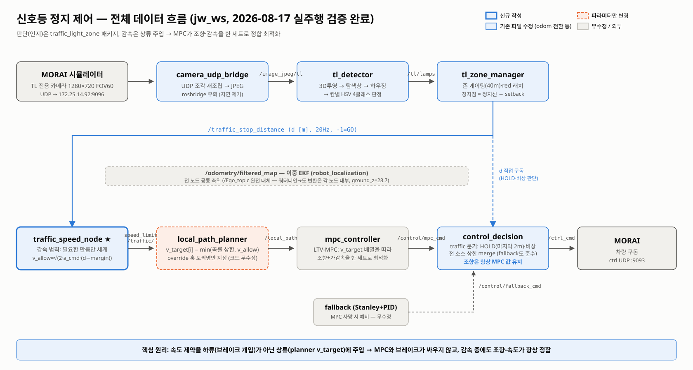
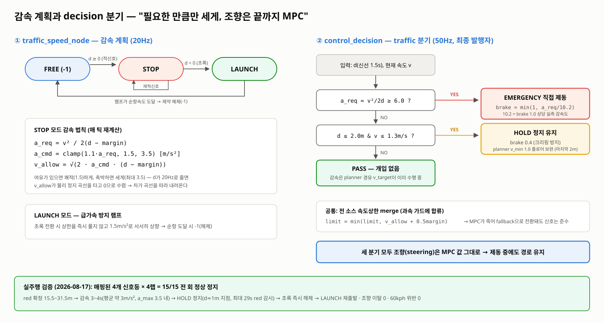
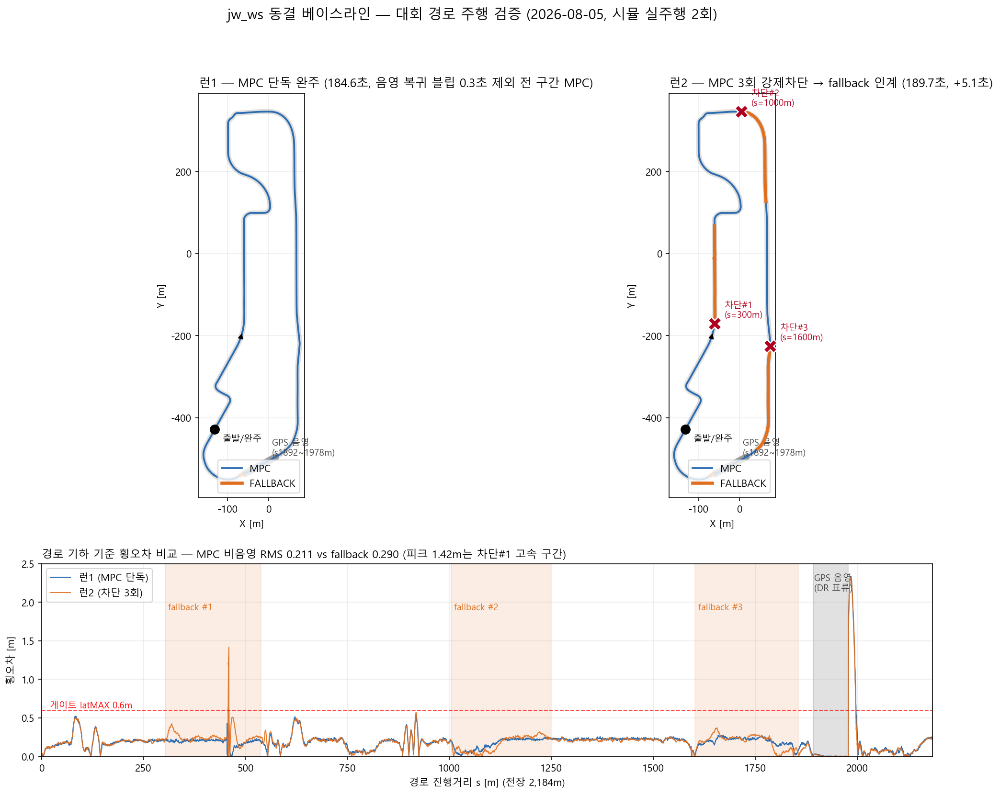
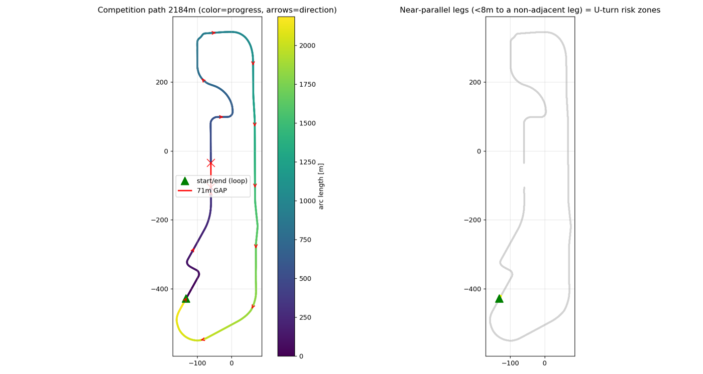

MORAI 시뮬레이터 위에 ROS 기반 7개 패키지 주행 스택을 설계·구현. 센서 수신(UDP 브리지)부터 이중 EKF 측위(50Hz), 곡률 기반 지역 경로(20Hz), 신호등 인지·감속, LTV-MPC 제어까지 전 파이프라인을 담당했습니다.
센서 → 측위 → 경로 → 신호등 → 제어로 이어지는 7개 패키지 파이프라인. 핵심 설계 원칙은 속도 제약(신호등 감속 등)을 하류 브레이크 개입이 아니라 상류 planner의 목표 속도 프로파일에 주입하는 것 — MPC가 조향과 가감속을 한 세트로 정합 최적화하므로 감속 중에도 경로 추종이 유지됩니다.




1월 대회 분석 → PID·조향 실험(3월) → MPC 근거자료 및 설계(4월) → MPC 통합·검증(7월) → UDP 브리지 전환 → 60km/h 개선·스웨잉 해결(7–8월) → Fallback·음영구간·신호등 통합(8월)까지, 날짜별 작업 로그와 실험 영상으로 전 과정을 기록하며 개발했습니다. 문제가 생길 때마다 증거(영상·그래프)를 남기고 파라미터를 재측정 가능한 형태로 문서화하는 방식을 유지하고 있습니다.
이 프로젝트는 2024–25 KAUVOY 실차 측위 개발의 연장선으로, 측위 담당에서 주행 스택 전체 설계로 역할을 확장한 단계입니다.